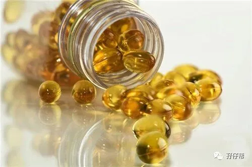

文|双胞胎爸爸群，5年医药研究经验的双胎宝爸@舒
图|来自网络，如有侵权，请联系删除
· 正 · 文 · 来 · 啦 ·
常有双胞胎妈妈私信我或在朋友圈留言提出一个问题：“孕期DHA要不要吃，啥时候开始吃？吃多少？要双份吗？哪种牌子好？”
我总是无法给意见，因为我孕期没有吃过DHA，不敢乱来！毕竟吃进肚子里面的东西，还是得慎重对待才行。
机缘巧合下，在双胞胎爸爸群逮到一位医药界的高手，一位有5年医药研究经验的双胎奶爸，他将给我们带来一个专业权威的答案。
以下内容来源于这位双胎奶爸关于DHA的一些看法（基于个人医药专业、经验和检索）
【01】 DHA是干啥的？
DHA是一种不饱和酸，对于脑、神经以及视网膜的发育有一定的促进作用，也就是对智力和视力的影响特别大，特别是在胎儿的器官形成，以及婴幼儿的生长发育过程中需求量较大。
但是在医学界是如何判定DHA有助于智力和视力的形成呢？有以下两个方法：
靶向标记跟踪实验发现其参与脑组织和视网膜的形成。
发现在脑组织和视网膜中DHA的含量相对较高。
这些也是通过大量的实验数据得到的，推导而得，至于原理机理目前医学是无法解释的（医学的发展要远远落后于疾病的发展）
基于上述两点，铺天盖地的DHA补益制剂和保健品，应运而生。
【02】 DHA是否要吃？
既然说DHA如此重要地决定着胎儿智力和视力的发育情况，那毫无疑问，我们要及时为胎儿们补充DHA，满足他们的需求。
但是请大家放心，DHA是可以通过人体自身形成的，正常饮食习惯下的孕妈妈是可以满足胎儿对DHA的需求的，无需额外补充DHA。
即使这些孕妈妈常规计量补充，多余的DHA也会被人体正常代谢掉，无影响。大量、过量补充反而给孕妈妈带来免疫力低下的副作用。
但是在医学上有个非常具有说服力的理论--个体差异，这个理论目前被广大的医护人员使用。
不同的孕妈妈个人体质、各项功能不同。
也就是说，有一定低概率的孕妈妈对DHA的转化能力相对较弱，或者存在一定的转运障碍（DHA的代谢合成过程较为复杂）。
这一部分孕妈妈即使额外补充再多的DHA，也无济于事。
还有一种孕妈妈，长期挑食、厌食，或者由于某些生理、病理原因少食，导致食入来源不足，即无法足量合成DHA。
这时，孕妈妈额外补充DHA是非常有效的和必要的。
当大家看到这里的时候，就会问，我怎么知道我自己是不是属于那种低概率事件中的一种呢?
告诉大家一个肯定性的答案：这个目前医学上还无法快速、准确的进行个体的确诊 。
既然说了是低概率事件，发生的概率自然会很低，让我们抱着平常心去面对吧。
【03】 DHA与胎儿的关系
胎儿和婴幼儿的智力、视力发育不仅仅受营养成分的影响，更重要的是基因遗传和生长环境的刺激，这一点是毋庸置疑，非常肯定的。
希望宝宝父母们要冷静客观的看待孕期保健品和药品的使用，大部分均是产品的商业营销手段。
作为在医药行业工作的我来说，这一点是最真实的。
如DHA的缺乏真的会对胎儿造成影响，并且概率较大时，社会定会采取一定的措施来避免和预防的，例如近些年对叶酸的普及。
个人建议：
1）对于在孕期控制饮食的孕妈妈（如控制体重、控糖），可以吃；
2）对于想寻求心理安慰（吃总比不吃好）的孕妈妈，可以吃；
3）对于大多数孕妈妈来说，可以不吃。
【04】 DHA的选择
至于网上的选择顺序：海藻油＞鱼油＞蛋黄提取物＞深海鱼食物，个人感觉无所谓。
口服制剂对人体的安全级别还是很高的，微量的重金属或者杂质会被正常代谢的。
购买保健品和药品时，千万不要轻易听信推销员的建议，因为药店里的销售员大多都不是执业药师和营养师，提成才是他们的关键。
注：以上均为本人个人观点，望大家阅读后自行判断。
孕期的关键还是要尽量提高孕妈妈心里的愉悦度，良好的心态也会给孕妈妈和胎儿们带来积极的影响，可以保持孕妈妈体内激素的平衡。
希望各位宝爸们孕妈们加油！
最后说一句，吃了DHA的孕妈妈，胎儿不一定聪明；没吃DHA的妈妈，胎儿不一定笨。
虽然这看似一句废话，但是大家细细品味，所有的父母都感觉自己的娃是最聪明的。
本期互动
#你的双胎孕期吃DHA了吗？#
欢迎留言区说出你的经历
-END-
重磅互动
#你希望写什么育儿经验干货？#
评论区聊一聊
随便提，万一下篇就写了呢？
关于这个号
谢谢关注！
我是圆圈妈
85后，全职妈妈
家有孖仔两枚，圆圈&圈圈
双胞胎育儿公众号：孖仔帮
ID:twinsbang
旨意分享双胞胎育儿经验帮助双胞胎家庭
有经验可循
有组织可靠
希望我的经验对您有所启发
期待与您一起共享双胞胎育儿经
